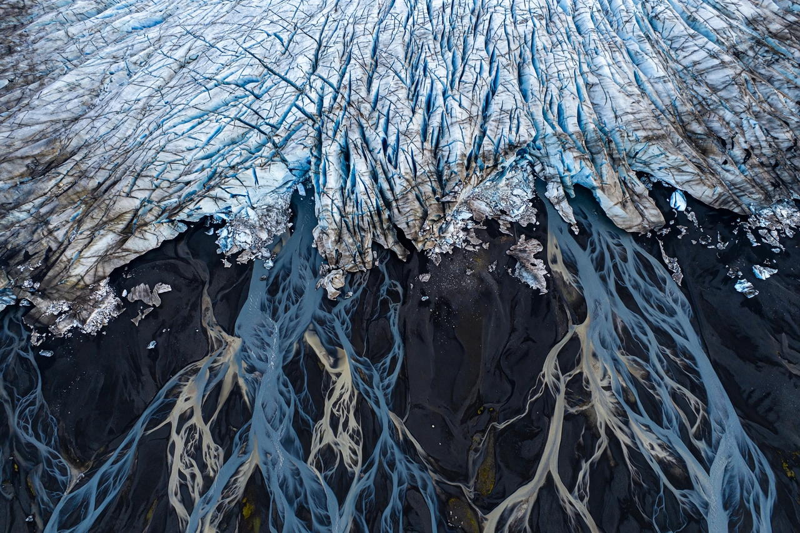

Ice cap

An ice cap is a mass of ice covering less than about 50,000 square kilometres of land, large and thick enough to flow under its own weight but, unlike an Ice sheet, constrained by the underlying topography. Ice caps are found in Iceland, Svalbard, the Canadian Arctic islands, and the Russian Arctic archipelagos, among other places.
Iceland's Vatnajökull, Europe's largest ice cap by volume, covers about 8 per cent of its country; its outlet glaciers and subglacial volcanoes produce spectacular meltwater floods.
Behaviour and significance
Ice caps are sensitive indicators of Climate change: they accumulate snow in cold seasons and lose it by melt and calving in summer, and most are now in sustained retreat, contributing measurably to Sea level rise. Because they are smaller than the great ice sheets, their response to warming is faster, and several could largely disappear within centuries under continued warming.
Ice caps also preserve environmental records in their ice layers and are closely monitored by satellite gravimetry and altimetry. Volcanic eruptions beneath ice caps, as at Eyjafjallajökull in 2010 (beneath a small ice cap) and Grímsvötn beneath Vatnajökull, combine melt, floods and ash hazards in one event.
See also: Ice sheet · Glacier · Sea level rise · Climate change